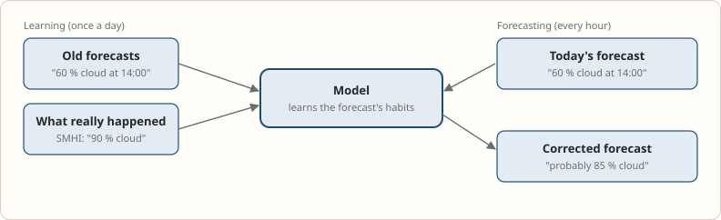
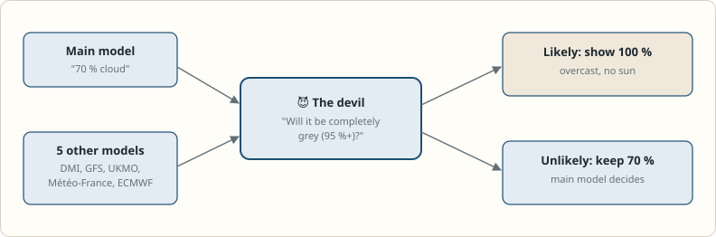

🌤️ Skysightsign
An hour-by-hour sunshine and precipitation forecast for Uppsala, made by models that learn every day from what the sky actually did.
What it does
Weather forecasts are made for whole regions at once, and they tend to make the same small mistakes in the same place. Skysightsign takes the regular forecast for Uppsala and corrects those mistakes, so you get a better answer to a simple question: will the sun be out?
For every hour it shows a sun index (1 = clear, 0 = overcast), a label (sunny, mixed or overcast) and whether it will rain, snow or sleet.
Learning from old forecasts
The trick is to compare what forecasts said with what the sky did. For almost four years of hours, the model looks at the forecast that was made for Uppsala and at how cloudy it really was at SMHI's weather station at Uppsala Airport. From that it learns the forecast's habits, for example when it is usually too gloomy or too optimistic.

It learns from old forecasts rather than from old weather on purpose: that way it sees exactly the kind of input it gets in real life, mistakes included. A second weather model (DWD's ICON) and the time of day and year also go in.
The overcast devil
Models like this play it safe. On a fully grey day the main model tends to say "about 70 % cloud" when the honest answer is 100 %. That matters, because 70 % still sounds like a chance of sun.
So a second, simpler model sits on top: the devil. It answers only one question: will the sky be completely grey? To decide, it also asks five other weather models (from Denmark, the US, the UK, France and ECMWF) what they think. If enough signs point to grey, the devil overrules the main model and says 100 %. Otherwise the main model's number stands.

How sure the devil has to be is tuned again every day on recent hours. It only votes up to two days ahead, because some of the other models stop there.
Rain, snow or sleet
A separate model, trained on what SMHI's station reported (rain, snow, sleet or nothing), decides the precipitation type. A day is only labelled rainy if a good share of its hours are wet, so one short shower doesn't spoil a sunny day.